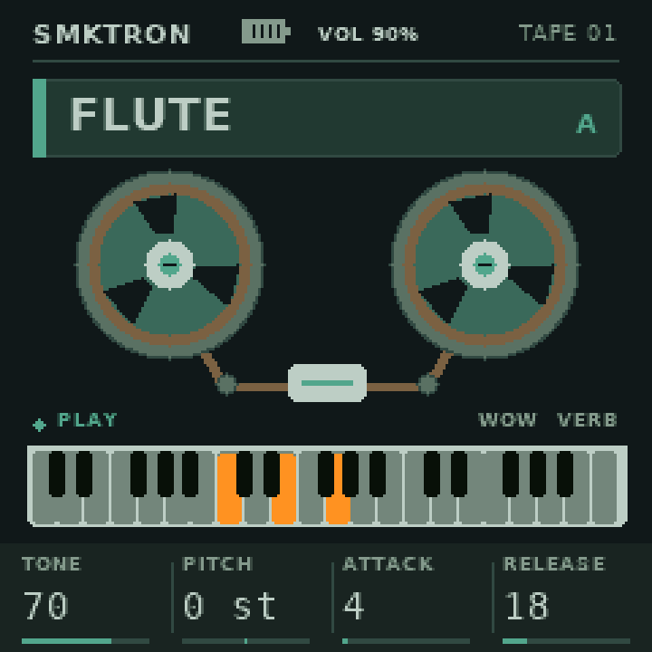
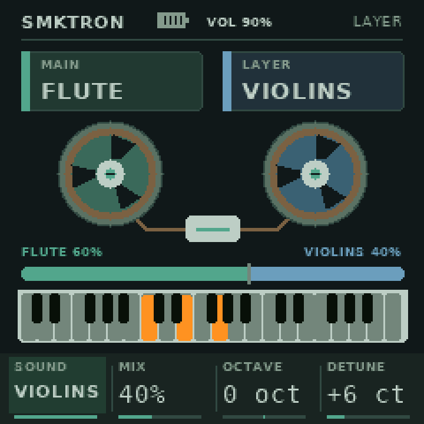

Fita e efeitos
Wow, flutter e desgaste de fita. GRAIN, vibrato pela roda de modulação, Leslie, echo, reverb e equalizador.
Um Mellotron lo-fi no seu SMK-37 Pro.
Quatro timbres de fita, duas vozes em layer, acordes nos pads e processamento granular. Experimente no navegador ou instale gratuitamente no teclado.
Wow, flutter e desgaste de fita. GRAIN, vibrato pela roda de modulação, Leslie, echo, reverb e equalizador.
Patch e layer, oito favoritos, oito acordes graváveis nos pads com HOLD e sequenciador. Volume de cena e master separados.
Light, Dark e Zoom. Aparência e brilho dos pads salvos globalmente. Salve seus timbres e efeitos nos favoritos.
Compatível com M-VAVE SMK-37 Pro. A primeira instalação exige firmware oficial V016. Use Chrome ou Edge no computador e um cabo USB de dados. O instalador confere o modelo e o pacote e pede confirmação antes de gravar.


O SMKTRON surgiu do excelente FMEL-1 para o FM-1, que consegue soar muito bem em um dispositivo com tão pouco armazenamento. A proposta do SMKTRON foi ajustar alguns samples e, principalmente, adaptar a interface e os controles para um instrumento focado em performance no M-VAVE SMK-37 Pro.
Concepção, direção musical e testes: Marcus Padrini. Desenvolvimento das adaptações, interface, controles, documentação e ferramentas web com participação do ChatGPT/Codex (OpenAI). Os projetos e autores originais permanecem creditados por suas contribuições.
Controles e instruções no GitHub · Fontes e licenças
Código derivado de FMEL-1, Dinghy e Felucca, com adaptações para SMK-37 e reverb do OberVave. Gravações de Bernie Kornowicz (Taijiguy), com termos próprios de uso não comercial. Créditos completos.